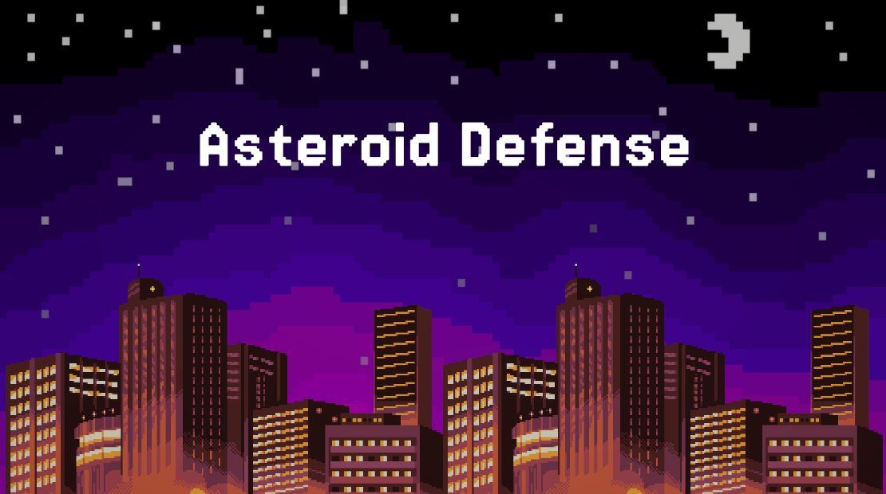

Asteroid Defense is a 2D space shooter I created in Unity. It was built over a two-week sprint where I handled every part of the development process myself.
To start, I designed the environment, including the city object at the bottom of the screen. I created an asteroid prefab with a movement script that not only controlled its descent but also handled destroying the asteroid when clicked. This was tied to a spawner script that generated asteroids at random intervals, gradually increasing both their speed and spawn rate to ramp up the difficulty.
One of my favorite design challenges was figuring out how to represent the city's health. Instead of a traditional health bar, I decided to have the city physically crumble — moving it downward on each hit. After the final hit, the city continues to fall off-screen before triggering the game over screen.
Once the core gameplay loop was complete, I added UI elements like a start menu, score display, and game over screen. From there, I focused on polishing the experience with explosion effects, sound effects, background music, and a crosshair for the player.
This was a fun project to work on and a great learning experience. Hope you enjoy playing it!

Color Bound is a game created by myself and three other classmates in my Game Development class at the University of Michigan. It was developed in Unity over the course of six weeks with structured milestones in which we decided which elements of the game to implement, fix, or polish.
The game is a 3D co-op puzzle platformer where players must navigate each level using colored abilities to solve the puzzles. Colors are central to the game's theme, with each color representing a different ability. The colors are also used in platforming elements as players must use their colors to open doors, walk over colored bridges, and more.
I had many different roles in the game's development, including the following:
Overall, this was a great project to work on and I learned a lot about game development. I am very proud of the final product and I hope you get a chance to playing it!
DISCLAIMER: The game requires two players and controllers to play.